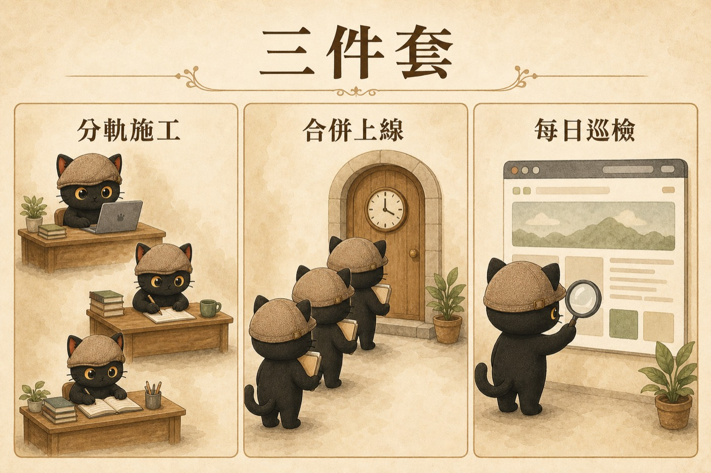

這篇在講什麼：你讓兩個以上的 AI 幫你顧網站，各做各的都好好的，可是每次要加一篇新文章、一個新作品，總有一個檔案要人工處理衝突，或者一個 AI 把另一個剛加的東西蓋掉。這篇用我自己官網的例子講清楚：那個檔是什麼、為什麼一定會撞、不處理會發生什麼事，還有我把它拆掉的過程中踩了哪些坑。你不用自己動手，看懂之後把文末那段話貼給你的 AI 就好。
- 自己用 AI 做了網站或作品集，開始讓兩個 AI（或兩個視窗）同時幫忙加內容，發現它們常常撞在一起的人
- AI 回你「先等另一個做完」「這個檔有衝突，請你決定」，你看不懂它在講什麼的人
- 讀過我前一篇〈兩個 AI 同時改一個網站，為什麼會打架？〉，照做了還是有一個檔每次要人工處理的人
- 三個問題，一眼認出你網站裡「那個大家都要改的檔」是哪一個
- 知道為什麼「講好誰等誰」擋不住它，要改的是結構
- 一段直接貼給 AI 的話，讓它幫你把這件事做完，裡面已經寫進我踩過的坑
你會遇到的情況
先講你會看到什麼，再講為什麼。
你的網站有一個「文章總覽」或「作品列表」頁。網站裡通常有一個檔案負責記住「總共有哪些文章、每篇叫什麼、摘要是什麼」，總覽頁就是照著它畫出來的。我的官網那個檔叫 articles-data.js，135 篇文章的資料全在裡面。
每次新增一篇文章，除了寫文章本身，還要往這個檔加一筆。一個人做的時候完全沒問題。
問題出在兩個 AI 同時做的時候。A 在寫文章一，B 在寫文章二，兩篇文章各在自己的資料夾，互不相干。可是到了要上線那一步，A 和 B 都要往同一個檔的同一個位置加一行。誰後到，誰就撞上。
你會看到的症狀有三種：
- AI 停下來說「這個檔有衝突，請你決定保留哪一邊」。你打開一看是兩坨長得差不多的程式碼，不知道怎麼選。
- AI 學乖了，開始互相等：「另一個還在改，我先不動。」原本可以同時做的事變成排隊。
- 沒有人停下來，後面那個直接蓋掉前面那個。文章一明明寫好上線了，總覽頁卻沒有它。
前兩種我的官網都遇過。第三種是另一家 AI 審這套機制時點出的風險，也是最要防的，後面坑五會講。
為什麼會這樣：牆上有一張紙，大家都要寫
把網站想成一間辦公室。每個人有自己的桌子，各做各的不會互相干擾；我前一篇講的「分軌施工」就是給每個 AI 一張自己的桌子。但辦公室牆上有一張總表，誰完成一件事都要走過去在同一張紙上加一行。桌子再多，那張紙只有一張。
這種「每新增一筆都要動、而且大家都要動」的檔案，我叫它共享熱點。它是多個 AI 打架的真正原因。文章跟文章之間不會撞，撞的幾乎都是那張紙。（兩個 AI 同時改同一篇的資料還是會撞，但那是真的在改同一篇文章，本來就該撞。）
我原本的解法是掛牌：誰要去寫那張紙先登記，別人看到有人登記就等。這有用，至少大家知道誰先誰後。但它只是講好了誰等誰，紙還在那裡，每次合併上線，還是得有人停下來處理它。

- 兩個 AI 同時改一個網站，為什麼會打架？ 那篇給每個 AI 一張自己的桌子，這篇把牆上那張大家都要寫的紙拆掉，是同一件事的下一步
- 可以放著讓 AI 自己跑完嗎？｜迴圈工程與圖譜工程不用會寫程式也學得會 那篇講怎麼讓 AI 自己把一件事跑完；這篇的問題，就是我在檢查那套流程時，被兩家 AI 同時指出來的
如果不處理，會發生什麼
每出一次事就多一條「先確認」「先登記」「先問我」。AI 越來越常停下來問你，你越來越常要看程式碼做決定。
最危險的一種：沒有錯誤訊息，只是總覽頁少了一篇，可能幾天後才發現。
機器明明可以並行，你被那張紙逼回一次只做一件事。
我怎麼解：把那張紙拆成每人一格
概念上只有三步。細節你的 AI 會處理，我放在文末的備忘給它讀。
- 每篇文章的資料放回自己的資料夾。文章一的標題、摘要、標籤，就放在文章一的資料夾裡一個小檔。誰寫哪篇，就只動哪個資料夾。牆上那張紙沒有人再手寫。
- 總表改成機器算出來的。上線時跑一支小程式，把所有資料夾裡的小檔收齊、排好順序、合成總表。人不再維護它，它變成「生成檔」。
- 加一道守門。萬一有人（或哪個 AI）照舊習慣直接去改總表，小程式會停下來說「這幾筆是手改的，你要保留還是丟掉」，不會靜默覆蓋。
做完之後，A 和 B 各自在自己的資料夾加東西，上線時機器把總表重算一次，兩篇都在。合併上線那個窗口本來就一次進一個，這點沒變；變的是進去的人手上不再拿著一張要跟別人搶的紙。
順便說一句，這不是我發明的。據我所知，做網站的產生器工具（Jekyll、Hugo 這一類）本來就是這樣做的，每篇文章前面那一小段設定，就是這裡的小檔。我做得晚。真正逼我拆的是「多個 AI 一起加」這個新情況，它把原本無所謂的大檔變成了瓶頸。
- 多個 AI 改同一個網站，怎麼不打架：發佈閘門 那篇講上線前要有一道檢查，這篇的守門就是掛在那道檢查上的其中一項
- 哪些事可以交給 AI 自己跑完？｜我把內容產線拆成五個小迴圈 那篇有一條判準：能客觀驗對錯、錯了可以復原的事，才放心交給機器。總表改成算出來的，正好兩條都過
我踩過的坑（另一家 AI 幫我抓出來的）
機制是我跟 Claude 一起寫的。寫完我沒有直接上線，丟給另一家的 AI（Codex）審，來回三輪，抓出八個問題，全部修完才上。挑對你最有用的六個講，每個都是「看起來對、實際會出事」的那種。
還有兩個小的（拼錯的欄位被靜默略過、中斷後要人手動續跑時提示沒講清楚），也都修了。
你不用自己做：把這段貼給 AI
先用三個問題確認你有沒有這個問題：
目錄、索引、清單通常可以；人工排的精選順序不行。
三個都是「是」，它就是候選。把下面這段貼給你的 AI：
給你的 AI 讀的備忘（人可以跳過）
這一段是實作細節，給你的 AI 對照用。以下是我官網實際的做法。
一篇文章的小檔 articles/<id>/article.json：
生成器 build-articles-data.mjs 做四件事：驗證（id 等於資料夾名、url 等於 articles/<id>/、日期格式、related 指到存在的 id、id 不重複、未知欄位報錯），排序（updated 或 date 新到舊，同日再依 date、再依 id），輸出（格式照舊手寫版的寫法，key 不加引號、縮排與每筆收尾一致，所以三支用 regex 讀它的腳本零修改），守門（有漂移就停下列出，不靜默覆蓋）。
| 模式 | 做什麼 | 誰用 |
|---|---|---|
| 不帶參數 | 重建；偵測到手改就停 | 本機預覽 |
--check | 只比對不寫，不一致就回失敗 | 上線前檢查 |
--adopt | 把手改的那幾筆回寫成 article.json，再重建 | 遷移舊分支、救援 |
--force | 丟掉手改直接重建 | 確定要丟才用 |
三方漂移判定一句話：生成檔裡的一筆，既不等於來源、也不等於任何一個基準版，才算手改；等於來源＝已同步，等於基準版＝只是過期，重建即可。基準版由合併腳本在 squash 之前算出分叉點，連同主線當下版本用環境變數傳入；生成器自己在工作桌上跑時只用「與遠端主線的共同祖先」當基準，沒有遠端就退回目前版本，不在 git 裡就退回兩方比對並印出警告。
合併腳本多做三件事：squash 前先算分叉點傳給生成器；生成檔衝突時總表收分支版交生成器判、另外三個生成檔（站內索引、關鍵詞、英文清單）收主線版重建，非生成檔衝突停下並提示如何手動帶基準版；重建結果與內容壓同一個 commit。
邊界：只有這四個生成檔會自動收，sitemap.xml、llms.txt、llms-full.txt 仍是手維護檔。「不列入總表」的記號檔 article.unlisted（頁面上線但不進清單）與 .vercelignore（整個資料夾不上線）是兩種意圖，生成器對後者自動略過並印出。標籤受控清單 articles-tags.json 同樣三方判定，不認識的頂層欄位報錯；既有 17 處主題標籤不在受控清單，只提醒不擋。登記簿的共享熱點清單 hotzones.json 目前還列著 articles-data.js，功能上已無影響，等 9 月 19 日復盤一併整理。站內搜尋的別名檔 search-aliases.js 是下一個候選，同一招可用。
彩蛋
這篇文章自己就是照新流程加進總表的：資料寫在它自己資料夾的小檔裡，我從頭到尾沒有碰那張紙。前一篇的彩蛋是「機制的第一個使用者是它自己」，這篇延續同一件事。